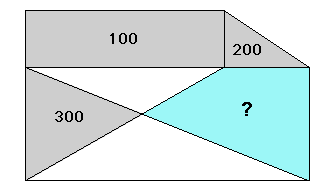

Puzzle 17: Ungenaue Grundstückzeichnung

"In diesem Bild stimmt kein Mass. Wie soll ich da die Grundstücksteuer für Bauer Eglis blau markierten
Acker festlegen?" fragt der Finanzbeamte.
"Längentreu zu zeichen war noch nie meine Stärke, dafür ist alles, was
wie ein rechter Winkel aussieht, in Wirklichkeit auch einer", erklärt Messgehilfe Schlufi, "und schliesslich
hat mir Egli versichert, dass er für die grau markierten Teile immer Fr. 100.-, Fr. 200.- und Fr. 300.- bezahlt."
Die Steuer ist proportional zur Fläche. Wie viel muss Egli für das blau markierte Grundstück bezahlen?
©1997 - 2026 www.mathematik.ch |🔍